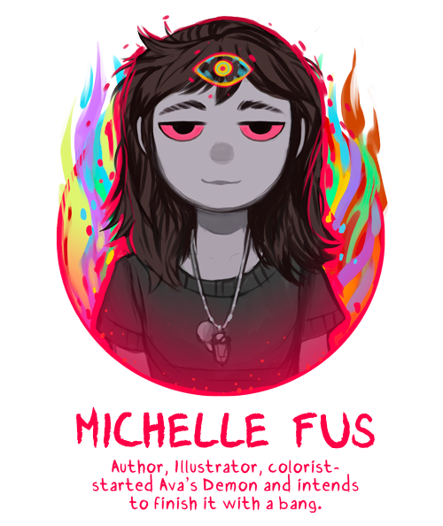

About The Artists
Michelle Czajkowski
Michelle Czajkowski, also known as Michelle Fus or Tinypaint, is the creator of Ava's Demon

Clark Powell
Clark Powell is the composer behind the kickstarter Book One trailer song "A heaven broad and ochre" and the "Maggie's Garden" animation.
Prior to their work for the Ava's Demon webcomic they created two albums for the Homestuck webcomic. Later they worked to compose or sound design for games such as "Crea", "Kintsukuroi", "Baldrick's Tomb" and "Battle Chasers: Nightwar"